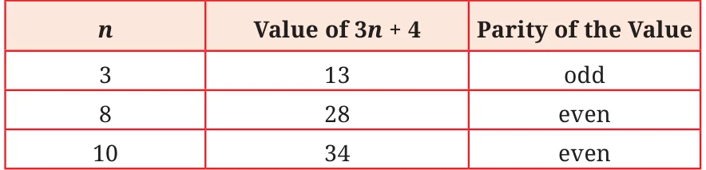
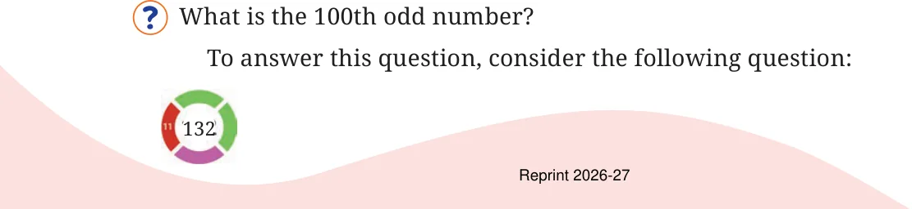

Consider the algebraic expression: \(3n + 4\). For different values of n, the expression has different parity:

Come up with an expression that always has even parity. Some examples are: 100p and \(48w - 2\). Try to find more. Come up with expressions that always have odd parity.
Come up with other expressions, like \(3n + 4\), which could have either odd or even parity.
The expression \(6k + 2\) evaluates to 8, 14, 20, ... (for \(k = 1, 2, 3, ...\)) — many even numbers are missing.
Are there expressions using which we can list all the even numbers? Hint: All even numbers have a factor 2.
Are there expressions using which we can list all odd numbers?
We saw earlier how to express the \(n^{\text{th}}\) term of the sequence of multiples of 4, where \(n\) is the letter-number that denotes a position in the sequence (e.g., first, twenty third, hundred and seventeenth, etc.).
What would be the \(n^{\text{th}}\) term for multiples of 2? Or, what is the \(n^{\text{th}}\) even number? Let us consider odd numbers.

What is the 100th even number?
This is \(2 \times 100 = 200\).
Does this help in finding the 100th odd number? Let us compare the sequence of evens and odds term-by-term. Even Numbers: 2, 4, 6, 8, 10, 12,... Odd Numbers: 1, 3, 5, 7, 9, 11,... We see that at any position, the value at the odd number sequence is one less than that in the even number sequence. Thus, the 100th odd
number is \(200 - 1 = 199\).
Write a formula to find the \(n^{\text{th}}\) odd number. Let us first describe the method that we have learnt to find the odd number at a given position:
- Find the even number at that position. This is 2 times the position number.
- Then subtract 1 from the even number.
Writing this in expressions, we get
- \(2n\)
- \(2n - 1\)
Thus, \(2n\) is the formula that gives the \(n^{\text{th}}\) even number, and \(2n - 1\) is the formula that gives the \(n^{\text{th}}\) odd number.